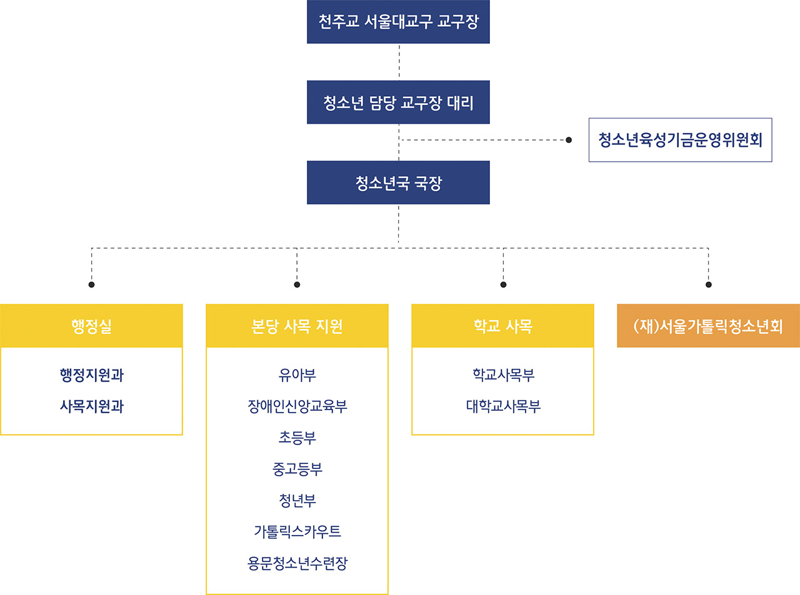

청소년국은 1978년 3월 31일 초대 교육국장 강우일 신부가 부임하여 유아, 어린이, 청소년, 청년들을 대상으로 사목활동을 펼치고 있습니다.
이들이 예수 그리스도의 제자로 살아갈 수 있도록 힘을 주며, 그분을 본받아 참인간으로 성장하도록 돕습니다. 청소년들이 교회 안과 밖으로 행복할 수 있는 환경을 조성하려고 노력하고 있으며, 이들을 위한 다양한 교육 프로그램을 운영하고 있습니다.
청소년국은 세상을 향해 열려 있는 교회의 모습을 구현하는 차원에서 (재)서울가톨릭청소년회를 1999년 9월 1일자로 설립하여 가톨릭 정신에 입각한 청소년 육성과 청소년기본법이 지향하는 청소년의 건전한 육성을 하고 있습니다.
청소년국의 ‘사목부서’로는 본당과 학교를 지원하는 7개 부서(조직도 참고)가 있으며, 이들 사목부서를 지원하는 ‘사목지원부서(명동청소년국)’가 있습니다. 그리고 법인사업체(위탁수련관 3개, 법인직영수련장 2개, 법인사업체[주](역촌)), 花요일아침예술학교, 가톨릭청년센타(CYC)가 있으며, 이들을 지원하는 ‘법인 사무국’이 있습니다. ‘청소년국장터’는 온라인 쇼핑몰로 2009년에 오픈하여 청소년들을 위한 각종 캐릭터와 상품을 개발하여 판매하고 있다. 이들 각 부서와 법인단체들은 정기적인 모임과 회의를 통하여 청소년 교육과 지도에 대한 협동 사목을 전개하려고 노력하고 있습니다.
